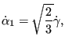

In a modal dynamic analysis, triggered by the *MODAL DYNAMIC key word, the response of the structure to dynamic loading is assumed to be a linear combination of the lowest eigenmodes. These eigenmodes are recovered from a file "problem.eig", where "problem" stands for the name of the structure. These eigenmodes must have been determined in a previous step (STORAGE=YES on the *FREQUENCY card or on the *HEAT TRANSFER,FREQUENCY card), either in the same input deck, or in an input deck run previously. If, in the latter case, the eigenmode analysis exhibited cyclic symmetry (i.e. if the *SELECT CYCLIC SYMMETRY MODES card was used) make sure to use the CYCLIC SYMMETRY parameter on the *MODAL DYNAMIC card. The dynamic loading can be defined as a piecewise linear function by means of the *AMPLITUDE key word.
The displacement boundary conditions in a modal dynamic analysis should match zero boundary conditions in the same nodes and same directions in the step used for the determination of the eigenmodes. This corresponds to what is called base motion in ABAQUS. A typical application for nonzero boundary conditions is the base motion of a building due to an earthquake. Notice that in a modal dynamic analysis with base motion non-homogeneous multiple point constraints are not allowed. This applies in particular to single point constraints (boundary conditions) in a non-global coordinate system, such as a cylindrical coordinate system (defined by a *TRANSFORM card). Indeed, boundary conditions in a local coordinate system are internally transformed into non-homogeneous multiple point constraints. Consequently, in a modal dynamic analysis boundary conditions must be defined in the global Cartesian coordinate system.
Temperature loading or residual stresses are not allowed. If such loading arises, the direct integration dynamics procedure should be used.
Nonzero displacement boundary conditions in a modal dynamic analysis require
the calculation of the first and second order time derivatives (velocity and
acceleration) of the temporarily static solution induced by
them. Indeed, based on the nonzero displacement boundary conditions (without
any other loading) at time a static solution can be determined for that
time (that's
why the stiffness matrix is included in the .eig file). If the nonzero
displacement boundary conditions change with time, so will the induced static
solution. Now, the solution to the dynamic problem is assumed to be the sum of
this temporarily static solution and a linear combination of the lowest
eigenmodes. To determine the first and second order time derivatives of
the induced static solution, second order accurate finite difference schemes are
used based on the solution at times
, and
 , where
is the time increment in the modal dynamic step. At the start of a
modal dynamic analysis step the nonzero boundary conditions at the end of the
previous step are assumed to have reached steady state (velocity and
acceleration are zero). Nonzero displacement boundary conditions can by
applied by use of the *BOUNDARY card or the *BASE
MOTION card.
, where
is the time increment in the modal dynamic step. At the start of a
modal dynamic analysis step the nonzero boundary conditions at the end of the
previous step are assumed to have reached steady state (velocity and
acceleration are zero). Nonzero displacement boundary conditions can by
applied by use of the *BOUNDARY card or the *BASE
MOTION card.
Damping can be included by means of the *MODAL DAMPING
key card. The damping models provided in CalculiX are direct damping and
Rayleigh damping. If direct damping is selected the viscous damping factor
 can be defined for each mode separately. Rayleigh damping,
assumes the damping matrix to be a linear combination of the problem's
stiffness matrix and mass matrix. In both cases the problem is split according to its
eigenmodes, and leads to ordinary differential equations. The results are
exact for piecewise linear loading, apart from the inaccuracy due to the
finite number of eigenmodes.
can be defined for each mode separately. Rayleigh damping,
assumes the damping matrix to be a linear combination of the problem's
stiffness matrix and mass matrix. In both cases the problem is split according to its
eigenmodes, and leads to ordinary differential equations. The results are
exact for piecewise linear loading, apart from the inaccuracy due to the
finite number of eigenmodes.
A modal dynamic analysis can also be performed for a cyclic symmetric structure. To this end, the eigenmodes must have been determined for all relevant modal diameters. For a cyclic modal dynamic analysis there are two limitations:
Special caution has to be applied if 1D and 2D elements are used. Since these elements are internally expanded into 3D elements, the application of boundary conditions and point forces to nodes requires the creation of multiple point constraints linking the original nodes to their expanded counterparts. These MPC's change the structure of the stiffness and mass matrix. However, the stiffness and mass matrix is stored in the .eig file in the *FREQUENCY step preceding the *MODAL DYNAMIC step. This is necessary, since the mass matrix is needed for the treatment of the initial conditions ([18]) and the stiffness matrix for taking nonzero boundary conditions into account. Summarizing, the *MODAL DYNAMIC step should not introduce point loads or nonzero boundary conditions in nodes in which no point force or boundary condition was defined in the *FREQUENCY step. The value of the point force and boundary conditions in the *FREQUENCY step can be set to zero. An example for the application of point forces to shells is given in shellf.inp of the test example set.
Special effort was undertaken to increase the computational speed for modal dynamic calculations. This is especially important if contact is used, since contact convergence can require very small time steps. If time is an issue for you, please take into account the following rules:
Summarizing, maximal speed will be obtained by applying a constant point load (Heaviside step function) in one node and requesting the displacements only in that node.